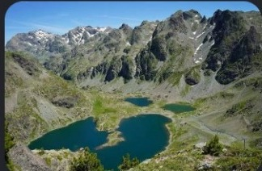
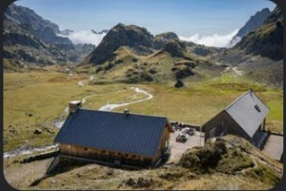
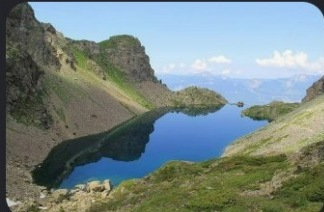
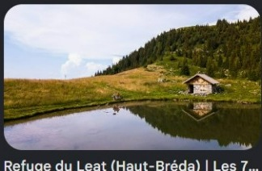
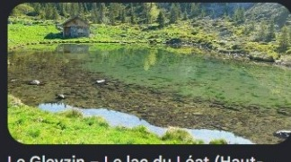

Deux itinéraires en Belledonne, accessibles en bus depuis Grenoble. De quoi trancher en équipe avant de réserver.
Option 1 — La Pra
Haute montagne minérale
ParcoursLinéaire (A→B)
Altitude max2 200 m
Dénivelé+850 m / -1 100 m
Distance16 km (9 + 7)
DifficultéMoyenne à confirmée
Bivouac5 €/tente
Option 2 — Le Léat
Alpage forestier
ParcoursAller-retour / boucle
Altitude max1 725 m
Dénivelé+1 000 m / -1 000 m
Distance10 km (5 + 5)
DifficultéMoyenne (raide, cardio)
BivouacGratuit
En bref : La Pra = plus long, plus technique (chaos rocheux), mais confort du refuge gardé (eau, toilettes, repas chaud, 5 €). Le Léat = plus court en distance mais montée continue très raide, totale autonomie (pas d'eau courante), et deux façons de dormir gratuitement.
À vérifier avant de réserver les bus : le retour de La Pra par Freydières n'a pas de ligne régulière fiable le week-end (voir onglet La Pra). Pour Le Léat, la correspondance locale depuis Allevard vers La Bourgeat Noire reste à confirmer.
Option 1 — La Pra / Lacs Belledonne
Traversée en 2 jours dans le cœur minéral de Belledonne.
2 200 maltitude max
16 km9 + 7 km
+850 / -1100dénivelé
5 €bivouac/tente
Itinéraire
Jour 1 — Chamrousse → Refuge de la Pra (9 km, +850 m)
Chamrousse Recoin → Col de la Botte → Lacs Robert → Refuge de la Pra.
Jour 2 — La Pra → Freydières (7 km, -1 100 m)
La Pra → Lac du Crozet → Freydières. Descente longue et technique : bâtons conseillés pour chevilles/genoux avec le sac chargé.
Transport
Aller
Bus N93 Grenoble → Chamrousse (ligne née de la fusion de l'ancien T87/Transaltitude). Départ Gières Gare Universités en semaine hors vacances, ou Grenoble Gare Routière le week-end et en vacances. ~78-80 min.
Retour
Freydières n'a pas de ligne régulière fiable le week-end. Options : le Bus Montagne de l'association Alpes Là (certains samedis de juin-juillet, réservation via HelloAsso, RDV 8h Parking MC2 Grenoble), ou redescendre vers Chamrousse pour reprendre le N93. À confirmer sur Mobilités M avant de réserver.
Bivouac & nuit
Zone aménagée à côté du refuge — 5 €/tente, accès sanitaires, eau potable et salle hors-sac.
Bivouac interdit ailleurs du 14 juillet au 31 août — seule la zone aménagée reste autorisée sur cette période. Chiens de protection de troupeau présents l'été : rester calme et discret en arrivant.
Plan B pluie — dormir au refuge
Réservation obligatoire, ouvert du 5 juin au 27 sept. 2026
~26 €/nuit adulte (13 € membre FFCAM)
Tél. 09 88 28 16 69 · refugedelapra.ffcam.fr
Photos — Option 1 · La Pra

Lacs Robert

Refuge de la Pra

Lac du Crozet
Option 2 — Chalet et Lac du Léat
Un alpage sauvage plus court, en totale autonomie.
1 725 maltitude max
10 km5 + 5 km
±1 000 mdénivelé
0 €bivouac
Itinéraire
Jour 1 — La Bourgeat Noire → Chalet du Léat (5 km, +1 000 m)
Montée continue et raide dès la forêt — 1 000 m de dénivelé sur seulement 5 km. Physique pour le cardio, mais sentier propre (terre et cailloux classiques), sans chaos de blocs ni passage vertigineux.
Jour 2 — Retour (5 km, -1 000 m)
Même itinéraire qu'à l'aller, ou variante par les crêtes pour changer de paysage.
Transport
Aller / retour
Bus T86 Grenoble Gare Routière ↔ Allevard (ligne directe, ~63 min, service quotidien). Puis correspondance locale vers La Bourgeat Noire / Haut-Bréda — détail non confirmé, à vérifier sur Mobilités M ou auprès de la mairie du Haut-Bréda avant de réserver.
Bivouac & nuit — deux options gratuites
Cabane (Habert du Léat)
Pastorale, non gardée, poêle à bois, table, mezzanine en bois
Pas d'eau courante ni électricité — matelas personnel requis
Premier arrivé, premier servi
Tente libre
Autour du lac, de 19h à 9h
Bivouac sauvage total — filtration d'eau obligatoire
Pas de gardien, donc pas de réservation possible — le poêle à bois de la cabane sert déjà de plan B intempéries/froid.
Photos — Option 2 · Le Léat

Chalet du Léat — Haut-Bréda

Lac du Léat — Gleyzin / Haut-Bréda
Liste de matériel
Bivouac 2 jours / 1 nuit, 1700-2200 m. Coche au fur et à mesure.
Sac & couchage
Eau & cuisine
Obligatoire pour Le Léat et Lessy — La Pra a de l'eau potable au refuge